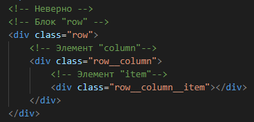

Методология - это некий свод правил, согласно которым мы особым образом задаем имена классов, потом работаем с ними в препроцессоре, определенным образом формируем файловую структуру проекта и т.д.
Основанная в середине двухтысячных компанией Яндекс, методология БЭМ всего лишь одна из множества подобных методологий. Однако ей удалось получить серьезную популярность.
В основе лежит принцип разделения интерфейса на независимые блоки, что позволяет легко и быстро выполнять верстку абсолютно любой сложности и использовать уже существующий код.
БЭМ
Само название БЭМ - это аббревиатура слов:
Cобственно, именно эти объекты и являются основой всей методологии.
БЛОК
Блок - это логически и функционально независимый компонент страницы, который может быть использован множество раз.
Например, заголовок используется на странице несколько раз, а также может быть использован и на других страницах. Поэтому нам стоит оформить его, как отдельный самостоятельный блок.
Когда мы задаем блоку имя класса, то должны отвечать на вопрос: "Что это?", а не "Какой?" и "Как выглядит?".
Имя класса принято писать латинскими буквами в нижнем регистре, а слова разделять тире.
В случае с заголовком я назову класс, как class="title". Но, к примеру, форму поиска я бы назвал, как class="search-form". То есть, два слова, разделенные тире.
Соответственно, придумывая имена для блоков мы должны максимально отобразить их содержимое. Например: логотип logo, меню menu, заголовок title, подзаголовок subtitle и так далее.
Чем лучше имена блоков будут отражать их содержимое, тем проще будет ориентироваться в коде. Грубо говоря, код будет более читабелен.
Что же касается стилей блока, то ему не стоит задавать внешнюю геометрию, например, отступы либо позиционирование.
Таким образом, обеспечивается независимость блока, при которой возможно повторное его использование либо перенос с места на место, никак не влияя на окружение.
Основные принципы работы с блоками
-
Блоки можно вкладывать друг в друга.
-
Допустима абсолютно любая вложенность блоков.
ЭЛЕМЕНТ
Элемент - это неотъемлемая составная часть блока, который не может использоваться в отрыве от него.
Так же, как и для блока, имя класса должно отвечать на вопрос: "Что это?"
Но, синтаксис записи будет следующим: имя класса блока два нижних подчёркивания имя элемента.
Например, у нас есть меню и у меню есть 4 пункта. Вот эти четыре пункта и будут элементами в коде.
Это будет выглядеть, примерно так:
Тег <nav> с классом menu - это блок.
Пункты - это ссылки. Они будут элементами. Можно их назвать, например, link. Их у нас 4.
menu - это блок.
menu__link - это элемент блока menu.
Вложенность элементов
Например, правильная запись:
Блок row. У него есть элемент column и внутри этого элемента есть элемент item.
Элемент item все равно является элементом именно блока row.
А вот неверная запись:

Блок row,
его элемент column и внутри элемента column неверно записан элемент item, как элемент элемента column. Это неправильно.
Принадлежность элементов
Элемент всегда должен быть частью блока и не должен использоваться отдельно от него.
Например, вот верная запись: блок about внутри которого элемент этого блока title и элемент этого блока subtitle
А вот неверная запись: блок about внутри которого элемент этого блока title,
а элемент subtitle находится за границами блока about.
Необязательность элементов
Элемент - это необязательный компонент блока.
Не у всех блоков должны быть элементы.
Например, у блока about нет своих элементов, только другие вложенные блоки
Когда же создавать блок, а когда элемент?
Создавайте блок, если фрагмент кода уже используется повторно либо может использоваться на других страницах сайта. При этом он не зависит от реализации других компонентов страницы.
Создавайте элемент, если фрагмент кода не может либо не будет использоваться самостоятельно, без родительского блока.
МОДИФИКАТОР
Применяется для определения или уточнения внешнего вида состояния или поведение блока либо элемента, когда нужно выделить некий объект из множества таких же.
Имя класса модификатора должно отвечать на вопрос: "Какой?", "Как выглядит?", "Как себя ведет?" либо состояние.
Модификатор дописывается классу блока либо элемента путем дублирования основного класса с добавлением одного нижнего подчеркивания и имени модификатора.
имяклассаблока_модификатор
имяклассаблока__имяэлемента_модификатор
Например:
Блок menu у которого есть 4 элемента item и первый элемент неким образом выделен.
В коде я дублирую основной класс элемента item menu__item, добавляю нижнее подчёркивание и также дописываю имя модификатора, как active menu__item_active.
И теперь в стиле я могу обратиться по этому имени класса и нужным образом выделить мой пункт меню.
МИКС
Рассмотрим еще очень важный прием МИКС, позволяющий использовать и блоки и элементы в одном объекте.
Миксы позволяют совмещать поведение и стили нескольких объектов без дублирования кода, создавать семантически новые компоненты интерфейса на основе существующих.
Например:
У нас есть блок about. Внутри блока about есть элемент about__title.
Но, этот элемент about__title также является отдельным блоком title.
То же самое происходит и с элементом subtitle. Он является одновременно и элементом about__subtitle и отдельным независимым блоком subtitle.
В данном примере мы совместили в поведении и стиле например блока title и элемента about__title блока about.
Такой подход позволяет нам задать внешнюю геометрию либо позиционирование в элементе about__title, а сам блок title оставить универсальным.
Таким образом, этот блок можно будет дублировать и использовать в любом другом месте. Это позволяет нам говорить о его независимости.